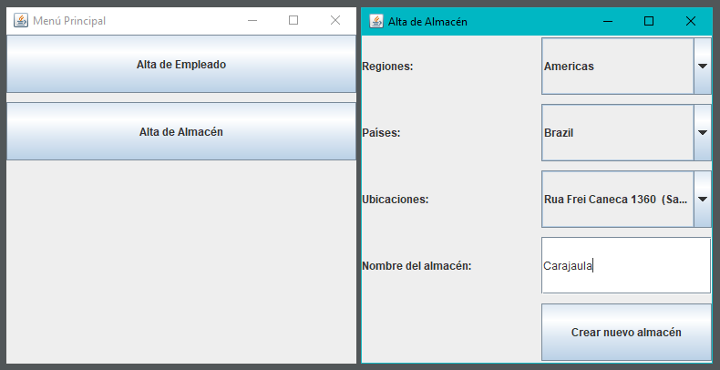
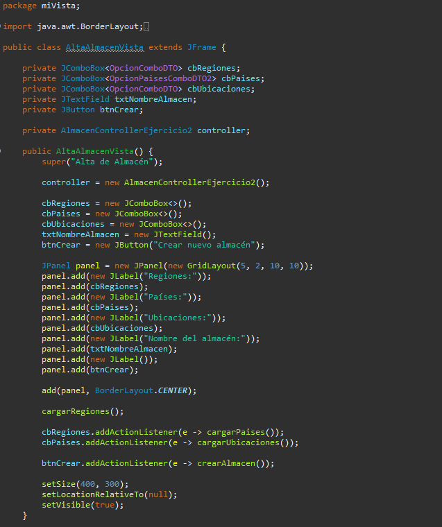
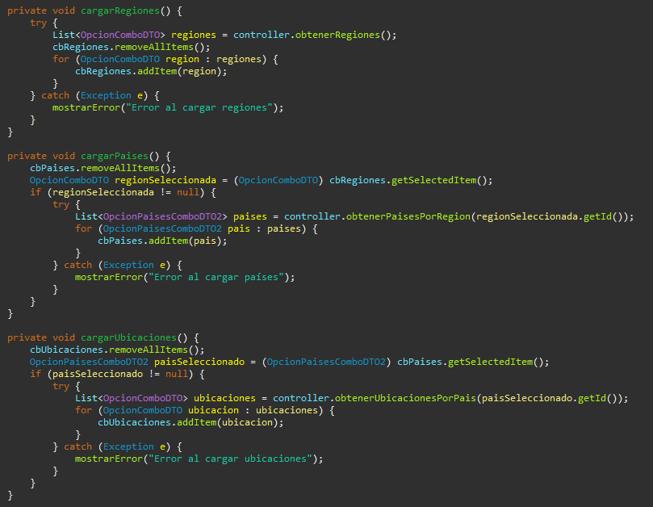
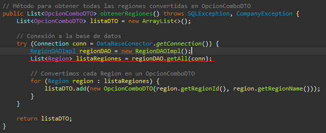
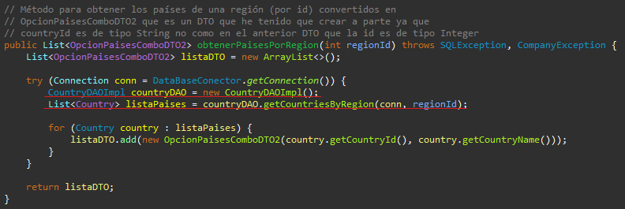
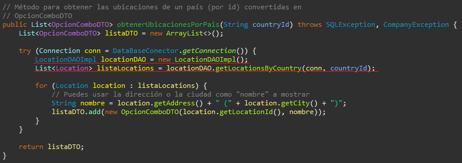
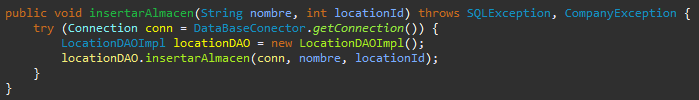

Permitir al usuario crear un nuevo almacén a través de una interfaz gráfica, seleccionando su ubicación mediante una cadena de selección: Región → País → Ubicación.

El usuario selecciona una región, luego un país dentro de esa región, después una ubicación concreta, introduce el nombre del almacén y finalmente lo guarda. El programa inserta ese almacén en la base de datos, en la tabla WAREHOUSES.
Al pulsar el botón "Alta de Almacén", se llama al controlador AlmacenControllerEjercicio2 que abre la ventana AltaAlmacenVista.
La clase AltaAlmacenVista es una ventana Swing con los siguientes elementos:
Cada combo se actualiza automáticamente cuando cambia el anterior. Por ejemplo, al cambiar de región, se recargan los países disponibles.
 
El controlador AlmacenControllerEjercicio2 es el intermediario entre la vista y los DAOs. Se encarga de:
RegionDAOImpl.

CountryDAOImpl.

LocationDAOImpl.

location_id usando insertarAlmacen().

Para adaptar correctamente los combos, se han utilizado dos DTOs:
OpcionComboDTO para regiones y ubicaciones.OpcionPaisesComboDTO2 para países (ya que el ID del país es String y no Integer).INSERT de almacenes.JOptionPane si falta algún dato.String como ID, ya que el DTO que usaba antes solo aceptaba Integer.
Esto me obligó a pensar mejor cómo adaptar los datos a la vista.
Este ejercicio me ha ayudado a entender mejor cómo manejar relaciones entre datos en una interfaz gráfica, y cómo construir una experiencia de usuario fluida con combos dependientes. Aunque al principio se me complicó un poco hacer que los combos se actualizaran bien y usar diferentes DTOs según el tipo de dato, con la práctica lo resolví. También he aprendido a validar mejor los datos antes de insertarlos, y a usar excepciones y mensajes para guiar al usuario. En definitiva, este ejercicio me ha servido para reforzar el patrón MVC y mejorar la interacción con bases de datos desde una interfaz Java.